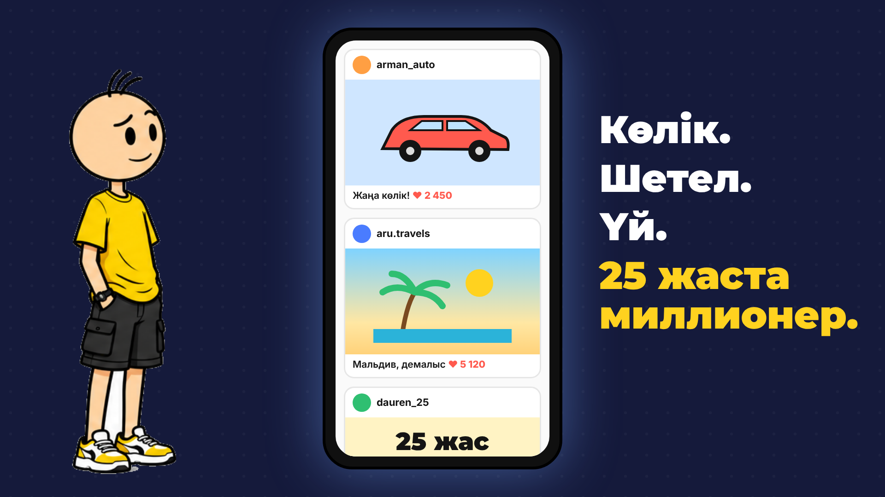
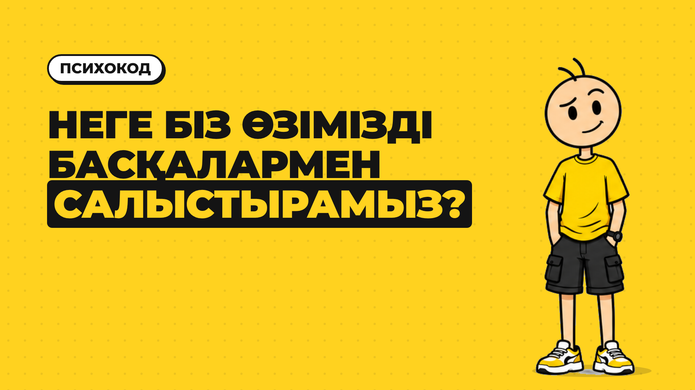
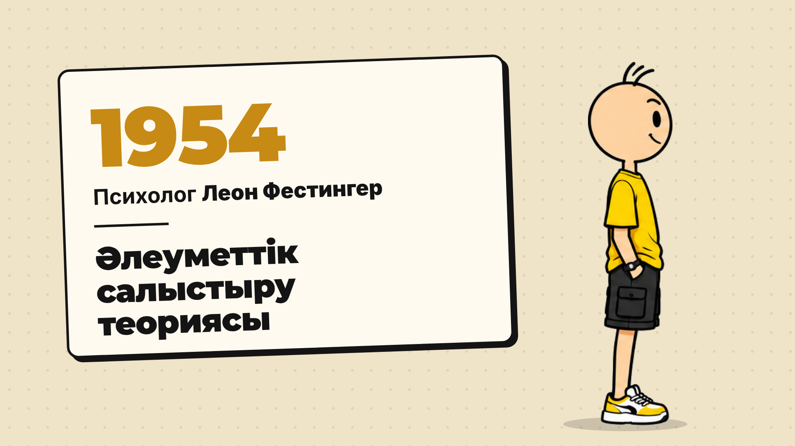
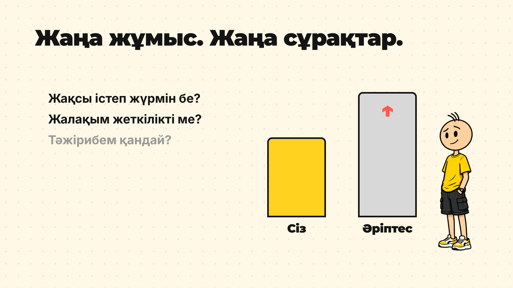
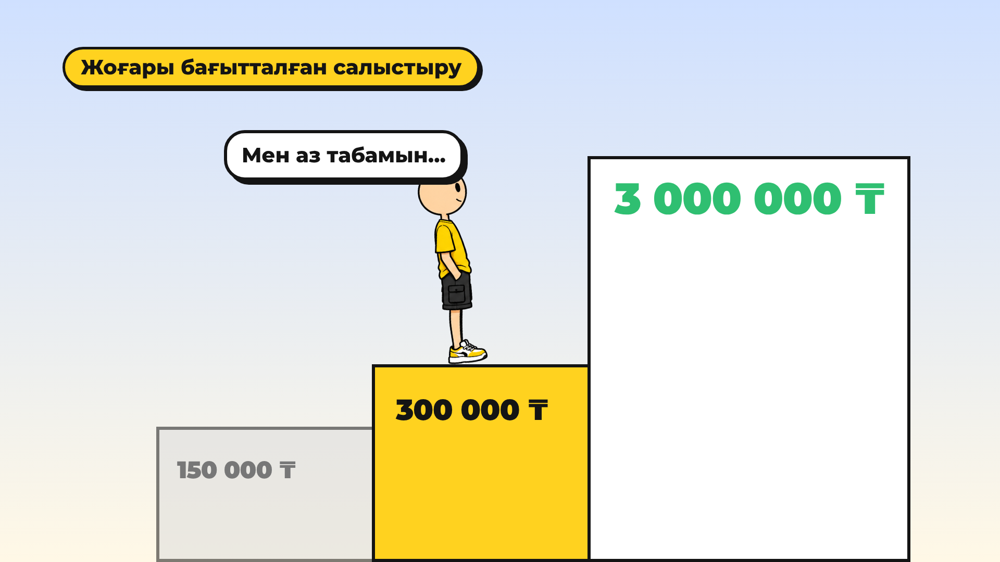
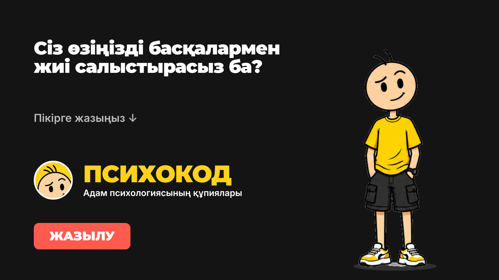

Түн, ай, телефон жарығы кейіпкердің бетінде. «Елестетіп көріңіз...»

Телефонда пост ағады: көлік, шетел, үй, «25 жаста миллионер». Әр сөзге бір пост.

Үш ой-бұлт кезекпен шығады; кейіпкердің беті мұңаяды.

«НЕГЕ БІЗ ӨЗІМІЗДІ БАСҚАЛАРМЕН САЛЫСТЫРАМЫЗ?» сөз-сөзден соғылады, ПСИХОКОД белгісі.

Ескі қағаз карточка: жыл, психолог, теория атауы.

Сұрақтар; «Сіз» мен «Әріптес» бағандары өседі, әріптестікі биік.

Баспалдақ: 150 000 / 300 000 / 3 000 000 ₸. Кейіпкер жоғары қарайды, төменгі сатыны ұмытады.

«сіздің сәтсіздігіңіз» сызылады; екі өмір жолы: 25 жас пен 30 жас.

Сол жақта жылтыр пост, оң жақта несие, түнгі жұмыс, шаршау.

Өсу сызығы; кейіпкер шыңда, «10 жыл» маман бөлек тұр.

Сұр «бір жыл бұрынғы» кейіпкер және түрлі «бүгінгі» кейіпкер. 2–3-әдістер осы стильде.

Екі жол айырылады; кейіпкер өз жолымен кетеді.

Сұрақ, ПСИХОКОД логосы, «ЖАЗЫЛУ» батырмасы.